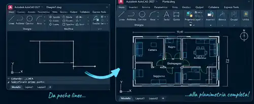

AutoCAD 2D
Coordinate, snap, comandi base e avanzati, layer, blocchi, retini e riferimenti.
Lezioni, corsi e ripetizioni personalizzati per scuola, università e lavoro. Parti da zero, supera un blocco o perfeziona il tuo metodo con esercizi, tavole e progetti reali, in un percorso davvero su misura.
Preparazione anche alla maturità, agli esami universitari e agli esami ufficiali di certificazione AutoCAD.
Primi 30 minuti gratis. Poi 15 €/ora, online in tutta Italia.

Non memorizzi soltanto comandi: impari quando usarli e come combinarli per lavorare con precisione, ordine e velocità.
Coordinate, snap, comandi base e avanzati, layer, blocchi, retini e riferimenti.
UCS, viste, navigazione, solidi, modifica e gestione dei modelli tridimensionali.
Quote, testi, scale, finestre di stampa e messa in tavola secondo gli standard richiesti.
Architettura, edilizia, disegno meccanico ed esercizi vicini al tuo percorso di studio o lavoro.
Il punto di partenza e il ritmo dipendono da te: ogni lezione è su misura e orientata a risultati concreti.

Linee, snap, quote, layer e precisione.

Trasformi le basi in elaborati ordinati e completi.

Layout, finestre, scale, testi, quote e stampa.

Dalla tavola al modello 3D e a un metodo più avanzato.
Offro lezioni, corsi e ripetizioni personalizzati a studenti che usano AutoCAD a scuola e all’università. Porta programma, esercizi e consegne: lavoriamo su ciò che ti serve davvero.
Piante, prospetti, sezioni, quote, scale e impaginazione.
Disegno tecnico, particolari, viste, sezioni e quotatura.
Rappresentazione di spazi e oggetti e tavole progettuali.
Disegno dell’architettura, rappresentazione e laboratori.
Ripetizioni per insegnamenti di disegno e CAD.
Disegno di interni, arredi e componenti nel tuo percorso.
I programmi cambiano fra scuole e atenei: personalizziamo le ripetizioni sulle indicazioni del docente.
Ripassiamo gli argomenti AutoCAD previsti dal tuo percorso con esercizi mirati, tavole, gestione del tempo e revisione degli errori.
Preparazione indipendente agli obiettivi dell’esame Autodesk Certified User (ACU) e, per percorsi avanzati, Autodesk Certified Professional (ACP). Iscrizione, voucher e certificazione non sono inclusi.
Sono Andrea Giaquinto, disegnatore AutoCAD certificato Autodesk Certified User (ACU), con oltre 20 anni di esperienza nel disegno tecnico. Le lezioni sono individuali, i corsi sono personalizzati e il metodo è su misura.
Partiamo da livello, programma di studio o problema di lavoro.
Comando, impostazioni, alternative ed errori da evitare.
Lavori sul tuo PC mentre condividi lo schermo e correggiamo subito.
Colleghiamo gli strumenti in un metodo riutilizzabile.
I tutorial possono essere utili per ripassare. Ma quando un passaggio non funziona sul tuo disegno, serve feedback immediato.
Condividi lo schermo e correggiamo insieme errori e impostazioni.
Niente scaletta uguale per tutti: approfondiamo ciò che serve a te.
Applichi subito i comandi sulla tua tavola o sul tuo progetto.
Ogni incontro ha obiettivi concreti e verificabili.
Ci concentriamo sulle priorità senza contenuti inutili.
Capisci il ragionamento, non copi semplicemente una sequenza.
Valutiamo livello, obiettivi e percorso più utile, senza impegno.
Prenota 30 minutiLezioni individuali, ripetizioni, preparazione esami e perfezionamento.
Iniziamo →Versione funzionante e licenza valida.
Deve gestire AutoCAD e videoconferenza contemporaneamente.
Connessione stabile anche in upload per condividere lo schermo.
Perché ricevi feedback immediato, esercizi adattati al tuo livello e correzioni sul tuo schermo. I video sono utili come supporto, ma una lezione su misura permette di fermarsi sui tuoi errori e costruire autonomia.
Sì. Il percorso si adatta a principianti, studenti e professionisti. Porta programma del docente, esercizi e dubbi da chiarire.
Sì, sugli argomenti AutoCAD previsti dal tuo percorso: esercizi, tavole, impaginazione e metodo operativo.
ACU (Autodesk Certified User) attesta competenze fondamentali/intermedie ed è adatta a studenti e utenti in fase di formazione. ACP (Autodesk Certified Professional) è una certificazione di livello più avanzato per chi usa AutoCAD in modo strutturato e professionale.
Per ottenerle si studiano gli obiettivi ufficiali, si pratica sui comandi richiesti, si prenota l’esame attraverso i canali ufficiali e si supera la prova. Io offro preparazione indipendente; esame e rilascio della certificazione non sono inclusi.
Sì. AutoCAD deve essere installato, attivato con una licenza valida e funzionante sul tuo computer.
La versione preferenziale e suggerita è AutoCAD italiano 2027, che uso come riferimento didattico. Non è obbligatoria: va bene qualsiasi altra versione di AutoCAD, italiana o inglese, purché adatta agli esercizi. Per il 3D serve una versione con le funzioni necessarie.
Gli studenti e i docenti idonei possono richiedere l’accesso Autodesk Education secondo i requisiti ufficiali Autodesk: account personale, verifica dello status e installazione del prodotto autorizzato. L’accesso Education è per usi educativi consentiti e non deriva automaticamente dalla partecipazione alle mie lezioni.
Un computer performante per la tua versione di AutoCAD, webcam, microfono e una connessione internet veloce e stabile, anche in upload, per sostenere videoconferenza e condivisione schermo insieme.
I primi 30 minuti sono gratuiti. Le lezioni successive costano 15 €/ora. Tutto si svolge online.
Commenti già pubblicati nella pagina dei servizi CAD/BIM. Si riferiscono ai lavori di disegno tecnico, non alle lezioni.
Velocissimo Andrea, tutto ok mi sono trovato bene, e ottimo prezzo! Disegni AutoCAD perfetti.
Stefano B. · AutoCADDisegno meccanico in poche ore e a prezzo stracciato. Super efficiente.
Dario M. · Disegno meccanicoOttimo lavoro, sezioni molto precise, bel template creato. Consigliato.
Carmela M. · Sezioni e templateRicostruzione oggetto 3D in AutoCAD ottimo. Rapido ed economico. Super consigliato!
Massimo V. · AutoCAD 3D